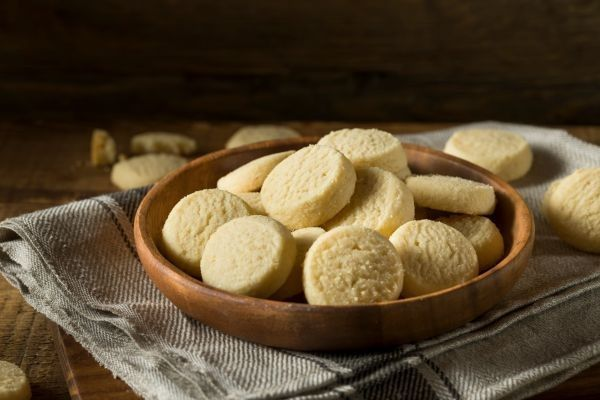

Galletas de mantequilla del Tonas
Una receta clásica, sencilla y deliciosa, perfecta para decorar, regalar o acompañar con un café o chocolate caliente.
Fácil
Dificultad25 min
Tiempo4 h
ReposoVarias
UnidadesTiempo de preparación
- Total: Aproximadamente 4 horas y 25 minutos
- Preparación: 10 minutos
- Reposo: 4 horas
- Horneado: 12–15 minutos
Ingredientes
- 200 g de mantequilla blanda
- 200 g de azúcar glas (azúcar flor)
- 2 huevos
- 2 cucharaditas de esencia de vainilla
- 450 g de harina
Sobre esta receta
Estas galletas de mantequilla son ideales si buscas una receta básica que siempre salga bien.
Son perfectas para cortar con moldes, decorar con glaseado o chocolate y compartir en familia en meriendas, fiestas o fechas especiales.
Instrucciones
- Batir la mantequilla y el azúcar: En un bol grande, bate la mantequilla blanda junto con el azúcar glas hasta obtener una mezcla cremosa y suave.
- Añadir huevos y vainilla: Incorpora los huevos y la esencia de vainilla. Sigue batiendo hasta integrar bien. No te preocupes si la mezcla parece cortada, luego se arreglará al añadir la harina.
- Formar la masa: Añade la harina poco a poco y mezcla hasta conseguir una masa uniforme y manejable.
- Refrigerar: Envuelve la masa en film transparente y déjala reposar en la nevera durante al menos 4 horas.
- Precalentar el horno: Antes de sacar la masa, precalienta el horno a 180°C.
- Estirar y cortar: Estira la masa sobre una superficie ligeramente enharinada o entre dos plásticos gruesos. Corta las galletas con moldes de la forma que prefieras.
- Colocar en bandeja: Pon las galletas sobre una bandeja de horno cubierta con papel vegetal o una lámina de silicona.
- Hornear: Hornea durante 12–15 minutos, dependiendo del tamaño de las galletas, o hasta que los bordes empiecen a dorarse ligeramente.
- Enfriar: Déjalas enfriar completamente antes de desmoldarlas o decorarlas.
- Decorar (opcional): Puedes decorarlas con glaseado de vainilla, chocolate derretido, frutos secos o coberturas al gusto.
Consejo importante
Enfría bien la masa antes de cortarla y hornearla. Así las galletas conservarán mejor su forma y sus bordes quedarán mucho más definidos.
¿Con qué acompañarlas?
Estas galletas combinan genial con un café, un té, un chocolate caliente o incluso con una bola de helado en días de calor.
También son una opción ideal para decorar en familia o regalar en ocasiones especiales.
Ideas para decorar
| Decoración | Resultado |
|---|---|
| Glaseado de vainilla | Acabado dulce y bonito |
| Chocolate derretido | Toque más intenso y elegante |
| Frutos secos | Textura crujiente extra |
| Sprinkles o decoraciones | Perfectas para fiestas o niños |